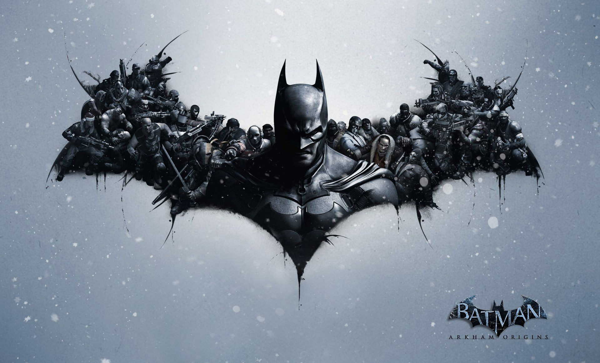

蝙蝠侠
蝙蝠侠（Batman）是DC漫画公司旗下的超级英雄，1939年5月于《侦探漫画》（DetectiveComics）第27期首次登场，是漫画史上第一位没有超能力的超级英雄。
蝙蝠侠是在1939年5月的《侦探漫画》第27期的杂志中诞生的一个虚拟人物。
他的创作灵感来自于佐罗和蝙蝠的结合，是一个伸张正义打击犯罪的超级英雄。他的真名叫布鲁斯·韦恩，出生在哥谭市最富有的家庭。一天晚上，父母带着布鲁斯看完电影《佐罗》回家，途经一条小径时遭遇歹徒的抢劫。歹徒当着布鲁斯的面枪杀了他的父母。从此，布鲁斯·韦恩就产生了亲手铲除罪恶的强烈愿望。他白天是锦衣玉食的花花公子，晚上则身披斗篷变身行侠仗义的超能力战士。
